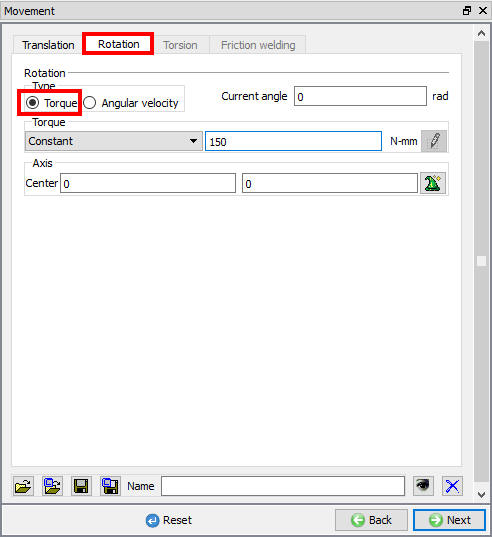
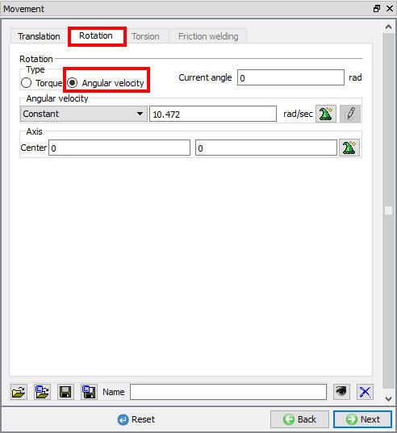
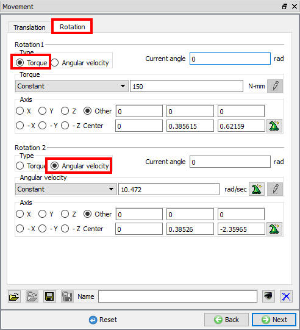

[2D, 3D]: Rotational movement is defined by an angular velocity about a fixed center of rotation. This movement type causes only rotation. Unless otherwise specified, translation is constrained. The rotational speed is controlled
through the Controlling Method option and the point at which the object is rotated about is set through the Center of Rotational Movement. See Fig. 15.9.1.,
Fig. 15.9.2. and Fig. 15.9.3. for
2d and 3d model rotational movement settings.

Rotation movement controls window settings for 2D Torque

Rotation movement controls window settings for 2D Angular velocity

Rotation movement controls window settings for 3D Torque and Angular velocity
Rotational Motion can be applied to simulate rolling or any type of movement where an object will rotate about a fixed axis. Rotational Motion can only be applied to Rigid objects. Rigid objects can have both Rotational and Translational movement simultaneously.
Controlling Method
The objects rotation can be controlled by an Angular Velocity or a Torque. Select the required control and enter the value for the rotation just below.
The Torque movement type will apply a rotational motion about the defined axis at a specified torque. The torque can be specified as a constant or as a function of time or angle.
Angular Velocity will apply rotational motion about the defined axis at a specified angular velocity in radians per second. The angular velocity can be specified as a constant or as a function of time or angle. Along with axis data, options are available to compute the center and axis from the geometry.
Note:
Idle rolls can be defined by specifying torque control with a very low torque value.
Axis of Rotation: is specified by a vector originating at the point center and through the point direction. Rotation direction is defined by the right hand rule. That is, positive rotation is clockwise as viewed from the center point looking towards the direction point.
Current Angle: current position of the object.
Related Topics:
15. Movement Controls Settings
15.11. Friction Welding movement
Appendix XIV: Rotating Workpiece Simulations